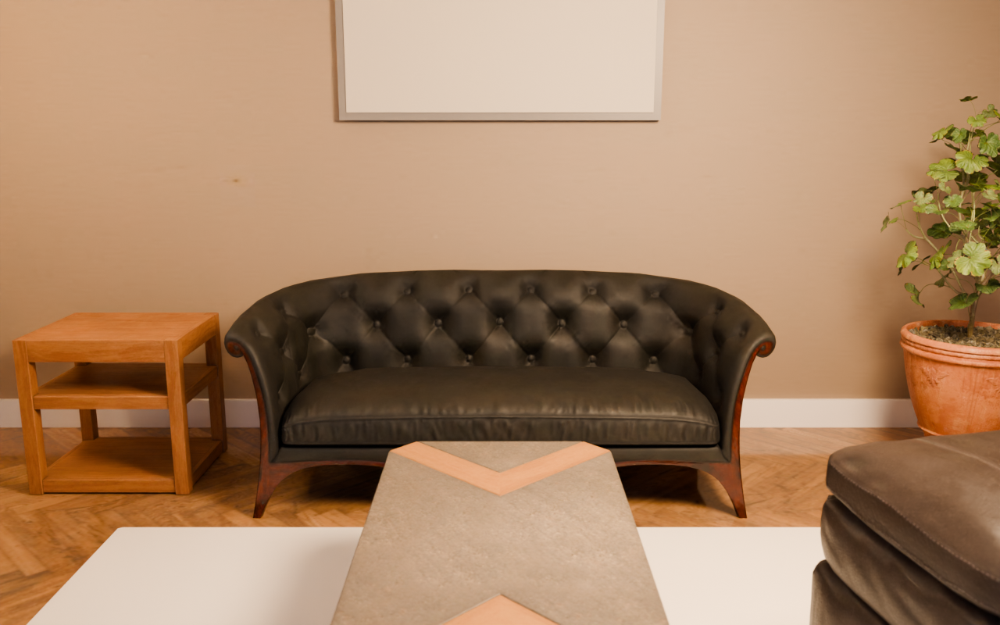
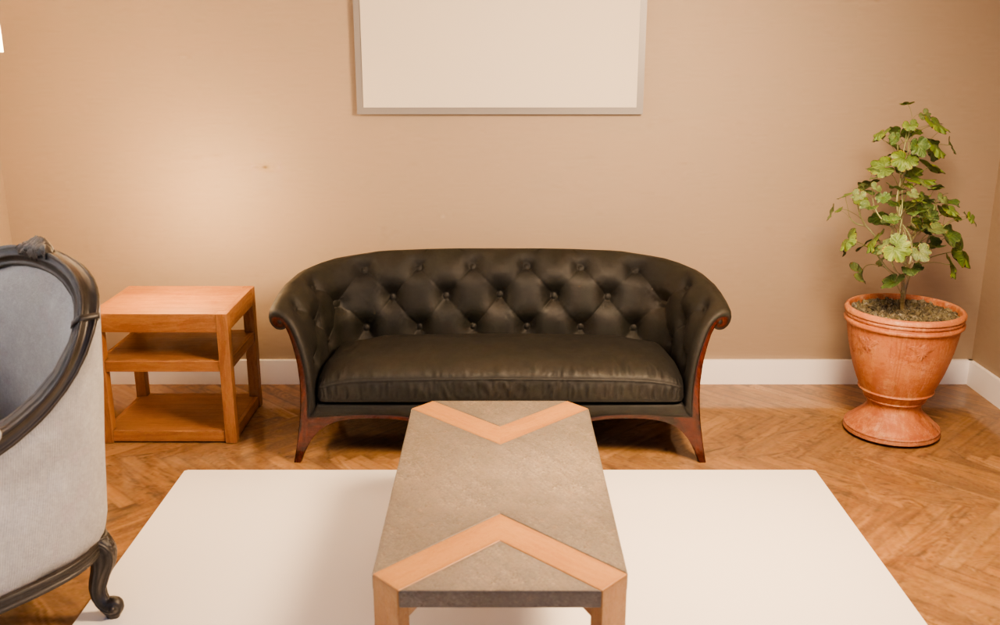

A brain + a judge steering a photoreal Blender interior (real CC0 furniture, PBR, HDRI daylight)
A photoreal living-room corner for a furniture catalogue hero shot: warm, calm, inviting, one clear focal composition (sofa + coffee table), natural daylight through a window plus one warm practical light, Scandinavian/Japandi taste, no clutter.
score 0.461 → 0.488 (+0.027) · best round r4
FIRST PLAN · r0

brain 0.671 · judge 0.29 · Reward circuit (OFC/vmPFC) is on but the appeal head is average: value is felt but what is good isn't legible / Face areas (FFA/STS) are silent: no human or gaze cue
BEST · r4

brain 0.648 · judge 0.36 · Reward circuit (OFC/vmPFC) is on but the appeal head is average: value is felt but what is good isn't legible / Object-shape (LO) and motion (MT) areas are low: a text-first screen with no clear object silhouette
Per round
| r | render | score | brain | judge | kept | why / objects |
|---|
| r0 | | 0.461 | 0.671 | 0.29
real 0.22 · light 0.22 · art 0.44 | ✓ | first plan
sofa_02, modern_coffee_table_01, ArmChair_01, potted_plant_01, side_table_01, Ottoman_01 |
| r1 |  | 0.404 | 0.491 | 0.33
real 0.33 · light 0.22 · art 0.56 | · | Removed cropped ottoman and floor-lamp clutter, pulled camera to eye-height, boosted side sun for daylight patches, and placed single warm table-lamp light on side table to make sofa+table the clear hero.
sofa_02, modern_coffee_table_01, ArmChair_01, potted_plant_01, side_table_01 |
| r2 |  | 0.389 | 0.511 | 0.29
real 0.33 · light 0.22 · art 0.44 | · | Pulled camera to standing eye-height, removed cropped ottoman to clarify sofa focal point, moved warm light to side table as practical, strengthened side sun and added warm art tone.
sofa_02, modern_coffee_table_01, ArmChair_01, potted_plant_01, side_table_01 |
| r3 |  | 0.422 | 0.502 | 0.36
real 0.33 · light 0.22 · art 0.56 | · | Removed cropped ottoman and floor-lamp to leave sofa+table as single hero, converted clutter light to one warm table-lamp glow on side table, re-angled armchair for diagonal lead-in, and set back eye-height camera with stronger side sun for calm Japandi daylight.
sofa_02, modern_coffee_table_01, ArmChair_01, potted_plant_01, side_table_01 |
| r4 | | 0.488 | 0.648 | 0.36
real 0.33 · light 0.22 · art 0.56 | ✓ | Removed cropped foreground ottoman, pulled camera back to standing eye-height, strengthened side sun for daylight patches and added warm side-table practical to leave sofa+table as single legible hero.
sofa_02, modern_coffee_table_01, ArmChair_01, potted_plant_01, side_table_01 |
| r5 |  | 0.476 | 0.623 | 0.36
real 0.33 · light 0.22 · art 0.56 | · | Removed cropped foreground armchair to leave sofa+table as single hero, boosted side-table lamp to a visible warm practical, and tuned left-window sun for directional daylight with soft shadows.
sofa_02, modern_coffee_table_01, potted_plant_01, side_table_01 |
| r6 |  | 0.482 | 0.635 | 0.36
real 0.22 · light 0.22 · art 0.56 | · | Removed cropped foreground armchair and floor-lamp clutter to leave sofa+table hero, boosted side-table warm lamp and tuned left sun for directional daylight, reframed camera to center composition.
sofa_02, modern_coffee_table_01, potted_plant_01, side_table_01 |
| r7 |  | 0.422 | 0.639 | 0.24
real 0.22 · light 0.11 · art 0.44 | · | Removed cropped foreground armchair to leave sofa+table hero, tucked floor-lamp to back corner and boosted side-table lamp glow with stronger left sun and tighter camera for calm directional daylight.
sofa_02, modern_coffee_table_01, potted_plant_01, side_table_01 |
| r8 |  | 0.480 | 0.632 | 0.36
real 0.33 · light 0.22 · art 0.56 | · | Removed cropped foreground armchair and floor-lamp clutter to leave sofa+table hero, added sheer curtain and boosted warm side-table lamp with stronger left sun for soft daylight patches.
sofa_02, modern_coffee_table_01, potted_plant_01, side_table_01 |
Best spec
{
"room": {
"w": 4.5,
"d": 4.0,
"h": 2.7,
"floor_tex": "herringbone_parquet",
"wall_tex": "beige_wall_001",
"wall_color": "#E9E1D6",
"ceiling_color": "#F7F5F0",
"baseboard": true
},
"window": {
"wall": "left",
"x": 0.3,
"z": 1.6,
"w": 1.8,
"h": 1.3,
"frame_color": "#FFFFFF",
"curtain_color": null,
"sill": true
},
"world": {
"hdri": "kloofendal_48d_partly_cloudy_puresky",
"strength": 1.0,
"rotation_deg": 0
},
"sun": {
"strength": 6.5,
"elevation_deg": 32,
"azimuth_deg": 265,
"kelvin": 5500
},
"lights": [
{
"type": "area",
"pos": [
1.0,
0.0,
1.8
],
"size": 0.6,
"power": 100,
"kelvin": 3000
},
{
"type": "point",
"pos": [
-1.35,
1.5,
0.9
],
"size": 0.15,
"power": 25,
"kelvin": 2700
}
],
"objects": [
{
"asset": "sofa_02",
"pos": [
0.0,
1.49
],
"rot_deg": 0,
"scale": 1
},
{
"asset": "modern_coffee_table_01",
"pos": [
0.0,
0.15
],
"rot_deg": 0,
"scale": 1
},
{
"asset": "ArmChair_01",
"pos": [
-1.5,
0.0
],
"rot_deg": -40,
"scale": 1
},
{
"asset": "potted_plant_01",
"pos": [
1.6,
1.45
],
"rot_deg": 0,
"scale": 1
},
{
"asset": "side_table_01",
"pos": [
-1.35,
1.5
],
"rot_deg": 0,
"scale": 1
}
],
"rug": {
"x": 0,
"y": 0.15,
"w": 2.4,
"d": 1.7,
"color": "#CFC8BB"
},
"floor_lamp": {
"x": -1.85,
"y": 0.9,
"height": 1.6,
"shade_color": "#EDE3D3",
"kelvin": 2700,
"power": 60
},
"art": {
"wall": "back",
"x": 0,
"z": 1.7,
"w": 1.2,
"h": 0.8,
"tex": "fabric_pattern_07",
"frame_color": "#3A3632"
},
"camera": {
"pos": [
0,
-2.4,
1.6
],
"look_at": [
0,
1.3,
0.55
],
"lens_mm": 35,
"fstop": 4.0,
"focus_object": "sofa_02"
},
"render": {
"samples": 96,
"w": 1280,
"h": 800,
"exposure": 0.4
}
}
Assets: Poly Haven (CC0). Renderer: Blender Blender Cycles, OIDN denoise, AgX.